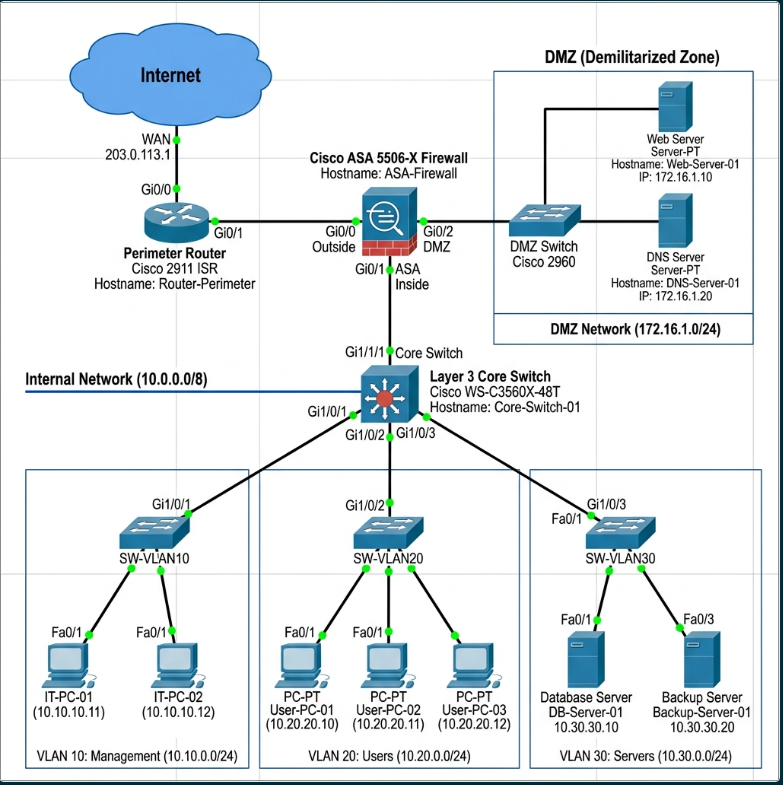

Guía de Práctica para Redes Empresariales
Arma la siguiente topología en tu espacio de trabajo de Packet Tracer:

enable
configure terminal
vlan 10
name Administracion
vlan 20
name Usuarios
vlan 30
name Servidores_Internosinterface GigabitEthernet1/1
nameif outside
security-level 0
ip address 200.0.0.2 255.255.255.252
interface GigabitEthernet1/2
nameif inside
security-level 100
ip address 192.168.1.1 255.255.255.0access-list OUTSIDE_IN extended permit tcp any host 172.16.1.10 eq 80
access-list OUTSIDE_IN extended permit tcp any host 172.16.1.10 eq 443
access-group OUTSIDE_IN in interface outside1. ¿Cuál es el propósito principal de implementar VLANs en esta práctica?